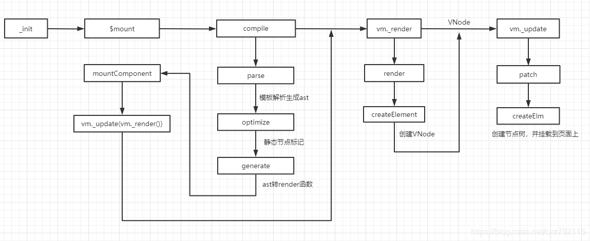
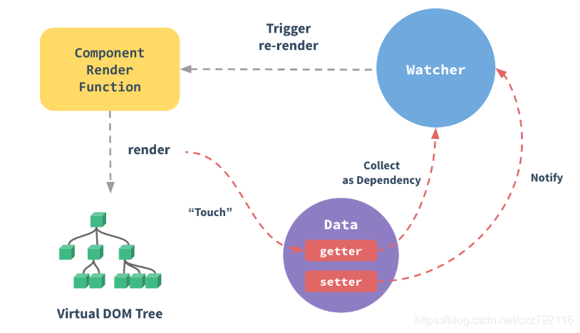

对MVVM模式的理解
MVVM 对应 3个组成部分，Model（模型）、View（视图） 和 ViewModel（视图模型）。
1）View 是用户在屏幕上看到的结构、布局和外观，也称UI。
2）ViewModel 是一个绑定器，能和 View 层和 Model 层进行通信。
3）Model 是数据和逻辑。
View 不能和 Model 直接通信，它们只能通过 ViewModel 通信。
Model 和 ViewModel 之间的交互是双向的，ViewModel 通过双向数据绑定把 View 层和 Model 层连接起来，
因此 View 数据的变化会同步到 Model 中，而 Model 数据的变化也会立即反应到 View 上。
严格的 MVVM 要求 View 不能和 Model 直接通信，而 Vue 在组件提供了 $refs 这个属性，让 Model 可以直接操作 View，违反了这一规定。
Vue的渲染流程
流程主要分为三个部分：
1）模板编译，parse 解析模板生成抽象语法树（AST）；optimize 标记静态节点，在后续页面更新时会跳过静态节点；
generate 将AST转成 render 函数，render 函数用于构建 VNode。
2）构建VNode（虚拟dom），构建过程使用 createElement 构建 VNode，
createElement 也是自定义 render 函数时接受到的第一个参数。
3）VNode转真实dom，patch 函数负责将 VNode 转换成真实dom，
核心方法是createElm，递归创建真实dom树，最终渲染到页面上。

Vue 生命周期
- beforeCreate: 在实例创建之前调用，由于实例还未创建，所以无法访问实例上的 data、computed、method等。
- created: 在实例创建完成后调用，这时已完成数据的观测，可以获取数据和更改数据，但还无法与dom进行交互，如果想要访问dom，可以使用 vm.$nextTick。此时可以对数据进行更改，不会触发 updated。
- beforeMount: 在挂载之前调用，这时的模板已编译完成并生成render函数，准备开始渲染。在此时也可以对数据进行更改，不会触发 updated。
- mounted: 在挂载完成后调用，真实的dom挂载完毕，可以访问到dom节点，使用 $refs 属性对dom进行操作。
- beforeUpdate: 在更新之前调用，也就是响应式数据发生更新，虚拟dom重新渲染之前被触发，在当前阶段进行更改数据，不会造成重渲染。
- updated： 在更新完成之后调用，组件dom已完成更新。要注意的是避免在此期间更改数据，这可能会导致死循环。
- beforeDestroy： 在实例销毁之前调用，这时实例还可以被使用，一般这个周期内可以做清除计时器和取消事件监听的工作。
- destroyed： 在实例销毁之后调用，这时已无法访问实例。当前实例从父实例中被移除，观测被卸载，所有事件监听器呗移除，子实例也统统被销毁。
Vue 父组件和子组件生命周期执行顺序
1、渲染过程
1)父组件 beforeCreate
2)父组件 created
3)父组件 beforeMount
4)子组件 beforeCreate
5)子组件 created
6)子组件 beforeMount
7)子组件 mounted
8)父组件 mounted
子组件早于父组件挂载，因为创建节点树时使用的是递归，子组件会先被创建完成，
最后才是整个父节点创建完成。
2、更新过程
1）父组件 beforeUpdate
2）子组件 beforeUpdate
3）子组件 updated
4）父组件 updated
3、销毁过程
1）父组件 beforeDestroy
2）子组件 beforeDestroy
3）子组件 destroyed
4）父组件 destroyed
data为什么要求是函数
当一个组件被定义，data 必须声明为返回一个初始数据对象的函数，
因为组件可能被用来创建多个实例。如果 data 仍然是一个纯粹的对象，
则所有的实例将共享引用同一个数据对象！通过提供 data 函数，每次创建一个新实例后，
我们能够调用 data 函数，从而返回初始数据的一个全新副本数据对象。
Vue 构造实例使用的是同一个构造函数，data 直接使用对象会导致实例的共享引用，
即组件间的状态会相互影响。通常发生共享引用，都是组件复用的情况。
使用函数返回一个对象，由于是不同引用，自然可以避免这个问题发生。
组件通信方式
- props/emit
- $children/$parent
- ref
- $attrs/$listeners
- provide/inject
- eventBus
- vuex
Vue 的5种指令
1）v-if
2）v-for
3）v-show
4）v-html
5）v-model
v-if 和 v-show 的区别
v-if 会让条件块内元素或组件适当地被销毁和重建。
v-show 的元素或组件一开始就被渲染，只是简单的进行css切换。
相比之下，v-if 会带来更高的切换消耗，所以频繁切换使用 v-show，不常切换则使用 v-if。
v-model的理解
v-model 是属性 value 和 input 事件的语法糖。内部默认将 value 作为值，
使用 $emit 触发 input 事件更新属性，从而实现双向绑定。
而自定义双向绑定可以定义组件的 model 选项设置 prop 和 event 来实现。
双向绑定原理
双向绑定是视图变化会反映到数据，数据变化会反映到视图，
v-model 就是个很好理解的例子。其实主要考查的还是响应式原理，
响应式原理共包括3个主要成员，Observer 负责监听数据变化，
Dep 负责依赖收集，Watcher 负责数据或视图更新，我们常说的收集依赖就是收集 Watcher。

响应式原理主要工作流程如下：
1）Observer 内使用 Object.defineProperty 劫持数据，为其设置 set 和 get。
2）每个数据都会有自己的 dep。数据取值触发 get 函数，调用 dep.depend 收集依赖；
数据更新触发 set 函数，调用 dep.notify 通知 Watcher 更新。
3）Watcher 接收到更新的通知，将这些通知加入到一个异步队列中，
并且进行去重处理，等到所有同步操作完成后，再一次性更新视图。
Vue 中 的 key 有什么作用
key 是每个 VNode 的唯一标识，依靠 key 能够在 diff 算法执行时更快的找到对应的 VNode，提高 diff 速度。
key 能保证元素之间的状态独立，在更新后状态不被复用，
避免一些意外的结果。就像输入框在复用的情况下，即使元素更新，
输入框的内容依旧没有刷新，这是因为 Vue 默认是使用“就地复用”的策略，
会尽可能减少创建和销毁的过程。
computed 和 watch 的区别
1）computed 依赖 data 的改变而改变，computed 有返回值；watch 观测 data，
执行对应的函数。
2）computed 有缓存功能，重复取值不会执行求值函数。
3）computed 依赖收集在页面渲染时触发，watch 依赖收集在页面渲染前触发。
4）computed 更新需要“渲染Watcher”的配合，computed 更新只是设置 dirty，
需要页面渲染触发 get 重新求值
Vue 中的 computed 是如何实现缓存的
“计算属性Watcher”会带有一个 dirty 的属性，在初始化取值完成后，会将求值结果缓存起来，
并把 dirty 设置为 false。只要依赖属性不更新，dirty 永远为 false，
重复取值也不会再去执行求值函数，而是直接返回缓存结果，从而实现缓存。
相反，依赖属性更新会将“计算属性 Watcher”的 dirty 设置为 true，
在页面渲染对计算属性取值时，再次触发求值函数更新计算属性。
1 | Object.defineProperty(target, key, { |
子组件为什么不能直接更改props？什么是单向数据流？
所有的 prop 都使得其父子 prop 之间形成了一个单向下行绑定：父级 prop 的更新会向下流动到子组件中，
但是反过来则不行。这样会防止从子组件意外变更父级组件的状态，从而导致你的应用的数据流向难以理解。
子组件不能更改 props 是因为要遵循单向数据流的原则。
单向数据流只允许数据由父组件传递给子组件，数据只能由父组件更新。
当数据传递到多个子组件，而子组件能够在其内部更新数据时，
在主观上很难知道是哪个子组件更新了数据，导致数据流向不明确，从而增加应用调试的难度。
但子组件更新父组件数据的场景确实存在，有3种方法可以使用：
1）子组件 emit，父组件接受自定义事件。这种方法最终还是由父组件进行修改，
子组件只是起到一个通知的作用。
2）子组件自定义双向绑定，设置组件的 model 选项为组件添加自定义双向绑定。
3）.sync 属性修饰符，它是第一种方法的语法糖，在传递属性添加上该修饰符，
子组件内可调用 this.$emit(‘update:属性名’, value) 更新属性。
Vue 如何检测数组更新
Vue 内部重写数组原型链，当数组发生变化时，除了执行原生的数组方法外，
还会调用 dep.notify 通知 Watcher 更新。触发数组更新的方法共7种：
1)push
2)pop
3)shift
4)unshift
5)splice
6)sort
7)reverse
keep-alive 是如何实现的？
keep-alive 是 Vue 的内置组件，同时也是一个抽象组件，不会作为元素被渲染到页面上。
它用于组件缓存。当组件切换时会将组件的VNode缓存起来，
等待下次重新激活时，再将缓存的组件VNode取出来渲染，从而实现缓存。
常用的两个属性 include 和 exclude，支持字符串、正则和数组的形式，
允许组件有条件的进行缓存。还有 max 属性，用于设置最大缓存数。
两个生命周期 activated 和 deactivated，在组件激活和失活时触发。
keep-alive 的缓存机制运用LRU(Least Recently Used)算法
说一下 nextTick 的原理
在下次 dom 更新结束之后执行延迟回调。nextTick 主要使用了宏任务和微任务。
根据执行环境分别尝试采用：
1)Promise
2)MutationObserver
3)setImmediate
4)setTimeout
nextTick 主要用于内部 Watcher 的异步更新，
对外我们可以使用 Vue.nextTick 和 vm.$nextTick。在 nextTick 中可以获取更新完成的 dom。
对比 Vue3 和 Vue2.x
1)使用 Proxy 代替 Object.defineProperty
2)新增 Composition API
3)模板允许多个根节点
Vue3 为什么使用 Proxy 代替 Object.definedProperty
Object.definedProperty 只能检测到属性的获取和设置，对于新增和删除是没办法检测的。
在数据初始化时，由于不知道哪些数据会被用到，Vue 是直接递归观测全部数据，
这会导致性能多余的消耗。
Proxy 劫持整个对象，对象属性的增加和删除都能检测到。Proxy 并不能监听到内部深层的对象变化，
因此 Vue 3.0 的处理方式是在 getter 中去递归响应式，只有真正访问到的内部对象才会变成响应式，
而不是无脑递归，在很大程度上提升了性能。
路由懒加载是如何实现的
路由懒加载是性能优化的一种手段，在编写代码时可以使用 import() 引入路由组件，
使用懒加载的路由会在打包时单独出来成一个 js 文件，可以使用 webpackChunkName 自定义包名。
在项目上线后，懒加载的 js 文件不会在第一时间加载，而是在访问到对应的路由时，
才会动态创建 script 标签去加载这个 js 文件。
1 | { |
Vue路由钩子函数
1、全局钩子
1 | // 1> beforeEach （路由进入前调用） |
2、路由独享钩子
1 | // beforeEnter 路由进入前调用，beforeEnter 在 beforeEach 之后执行 |
3、组件钩子
1 | // 1）beforeRouteEnter 路由确认前调用，组件实例还没被创建，不能获取组件实例 this |
vue-router的原理
vue-router 原理是更新视图而不重新请求页面。vue-router 共有3种模式：
hash模式、history模式、abstract模式。
1、hash模式
hash 模式使用 hashchange 监听地址栏的 hash 值的变化，加载对应的页面。
每次的 hash 值变化后依然会在浏览器留下历史记录，
可以通过浏览器的前进后退按钮回到上一个页面。
2、history模式
history 模式基于History Api实现，使用 popstate 监听地址栏的变化。
使用 pushState 和 replaceState 修改 url，而无需加载页面。
但是在刷新页面时还是会向后端发起请求，需要后端配合将资源定向回前端，交由前端路由处理。
3、abstract
不涉及和浏览器地址的相关记录。通过数组维护模拟浏览器的历史记录栈。
vuex 怎么跨模块调用
跨模块调用是指当前命名空间模块调用全局模块或者另一个命名空间模块。
在调用 dispatch 和 commit 时设置第三个参数为 {root：true}。
1 | modules: { |
vuex 如何实现持久化
vuex存储的状态在页面刷新后会丢失，使用持久化技术能保证页面刷新后状态依然存在。
1）使用本地存储配合，设置 state 同时设置 storage，在刷新后再初始化 vuex
2）vuex-persistedstate 插件